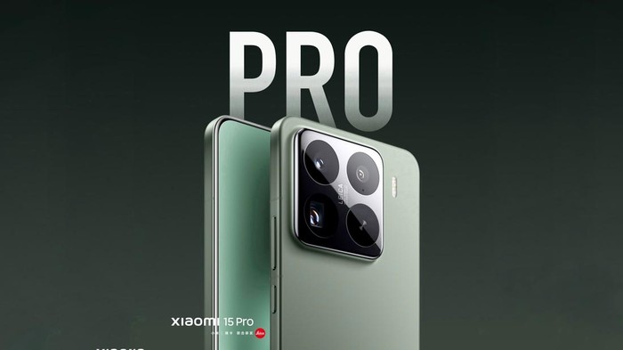

Bootloader Unlocking Akan Hilang Mulai Xiaomi 15?
Kabarnya hal ini akan datang bersamaan dengan HyperOS 2.0 yang akan diluncurkan di perangkat Xiaomi 15. Keputusan ini diambil setelah adanya regulasi baru terkait keamanan data dan perangkat oleh pemerintah Tiongkok. Namun belum diketahui apakah nantinya fitur bootloader unlocking ini akan dihentikan untuk versi Global juga atau versi Tiongkok saja.

Bootloader Unlocking sendiri adalah fitur penting yang memungkinkan pengguna untuk menginstal custom ROM, melakukan root, serta mendapatkan kendali administratif atas smartphone mereka. Ini telah menjadi salah satu poin menarik untuk smartphone Xiaomi. Terutama untuk pengguna yang ingin melakukan kustomisasi perangkat yang lebih jauh.
Jika aturan ini diberlakukan secara global, maka ini akan membatasi opsi kustomisasi untuk pengguna secara signifikan. Karena dengan membatasi akses ke bootloader akan secara efektif mengikat pengguna dengan software resmi saja.
Xiaomi sendiri sudah lama dikenal dengan citra yang cukup baik dalam memberikan kebebasan untuk penggunanya dalam mengkustomisasi perangkat mereka. Dan jika kabar ini benar, maka ini akan membuat citra tersebut luntur. Bagaimana dengan kalian? Apakah kalian setuju dengan hal ini?
.webp)